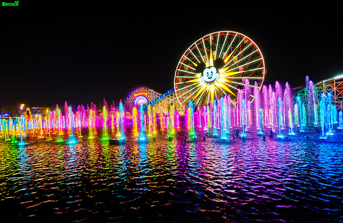
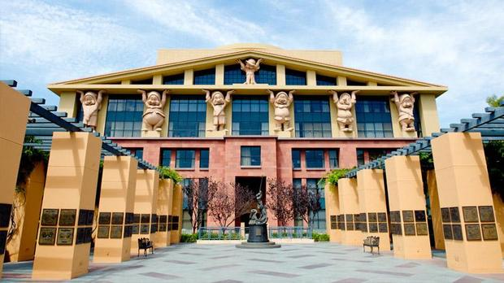
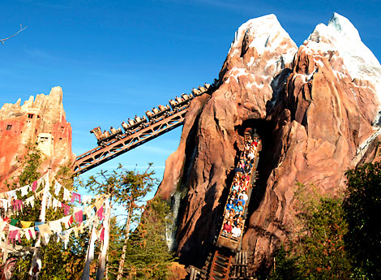
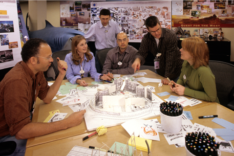
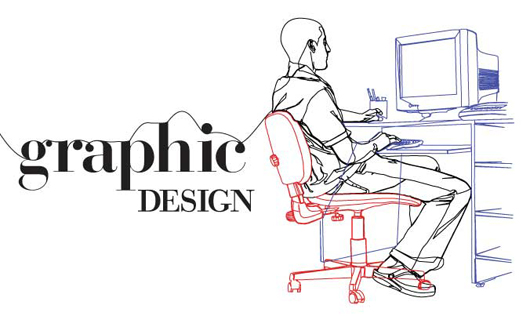

My future career goal is to become a Graphic/WEb Designer for The Walt Dinsey Imagineering Compnay! I have always dreamed of working for Disney and have been inspired fromthe company's creativity. My father was a Walt Diney Imagineer for 15 years and I have always wanted to be able to be apart of that magical experience he contributed to.Some of the think that I want to accomplish for Disney is creating new logos, posters,packaging and anything advertising their merchandise, attractions,shows, theme parks,ect.I would also like to work on different graphics through out their them parks. A graet example of this would be the World of Color and how the they use elemants ond principles od design to crreate the water show. Suvh include, lighting,sound, speacial effects,ect.In order to recieve my cridentials that will help me at WDI I wouldlike to go to an art school like The Art Center or Otis the college of Art and Design. Both schools offer great graphic/web design programs and recurit students to WDI.  
Walt Disney Imagneering comes from the two words imagine and engineering; and thats exactly what they do! They are the creative background that is responsible for everything regarding the Disney Theme Parks worldwide. This includes bulding attractions,designing que lines, and much more!The Walt Diney Imaginnering company is located in Gendale California were they come up with all of their ideas for the theme parks.They are able to create magic and unforgettable Disney experience for families for years!One thing that I love about WDI is that they go beyond boundaries that is categoraized as a typical theme park.A grate exanple of this is that they travle round the world in order to get their research and get all the details they need in order to make their attraction, movies, and audio antitortics to be as realistic as possible.When making the ride Expidition Everest, in Disney's Animal Kingdom, at Walt Dinsey World, Imagineers were able to travel to Napal in order to find inspiration for the attraction to create M]ount Everst and the local villages.  
Graphic and Web Designer are about of the world of visual communications that contribute to the fundamentals of the principles and elemants of design and print/web design pathways. Both majors focus on the basics like color, illustration, image manipulation,product packaging,ect.Coursees in Graphic and web design ranges from typography,layout structure, and webpage editing. In order to complete the many task of a graphic and web designer there are no limits to which programs they can use. Some of the programs they use incluse Illustrator,Photoshop, AfterEffects,Bridge,and Dreamweaver. There are also many opucations that I could get with a degree in Graphic and Web Design.Thes include Digital Designer, Production Artist,and Web Developer. 